dados <- ggridges::lincoln_weather |>
janitor::clean_names() |>
mutate(media_temperatura_c = (mean_temperature_f - 32)/1.8)Exemplos_aulas
Onde almejamos chegar
dados |>
ggplot(aes(
x = media_temperatura_c,
y = month,
fill = stat(x))) +
ggridges::geom_density_ridges_gradient(scale = 3, rel_min_height = 0.01) +
scale_x_continuous(expand = c(0, 0)) +
scale_y_discrete(expand = c(0, 0)) +
scale_fill_viridis_c(name = "Temp. [C]", option = "C") +
coord_cartesian(clip = "off") +
labs(title = 'Temperaturas em Lincoln (USA-NE) no ano de 2016') +
ggridges::theme_ridges(font_size = 13, grid = TRUE) +
theme(axis.title.y = element_blank())Warning: `stat(x)` was deprecated in ggplot2 3.4.0.
ℹ Please use `after_stat(x)` instead.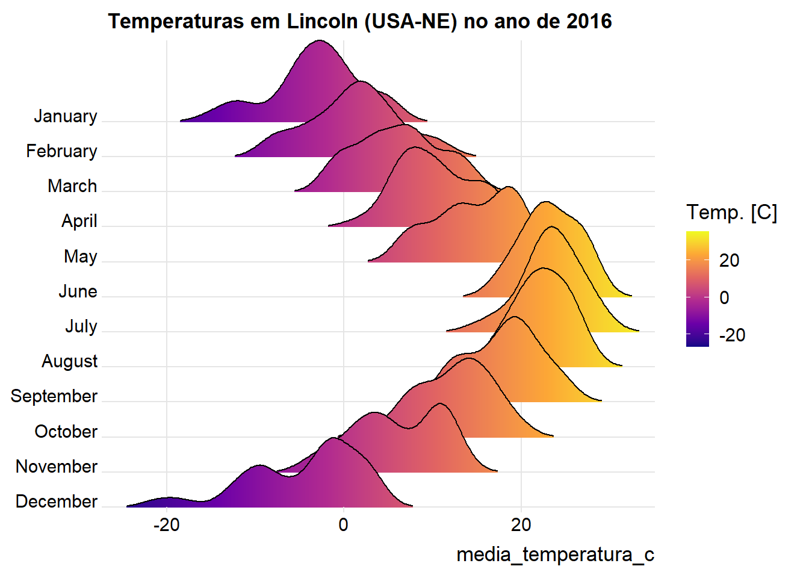
Pacotes que criar ggplot completos
Podemos incluir camadas de ggplot nesses pacotes
dados |>
select(where(is.numeric)) |>
select(contains("mean_")) |>
GGally::ggpairs(progress = FALSE) +
labs(title = 'Título')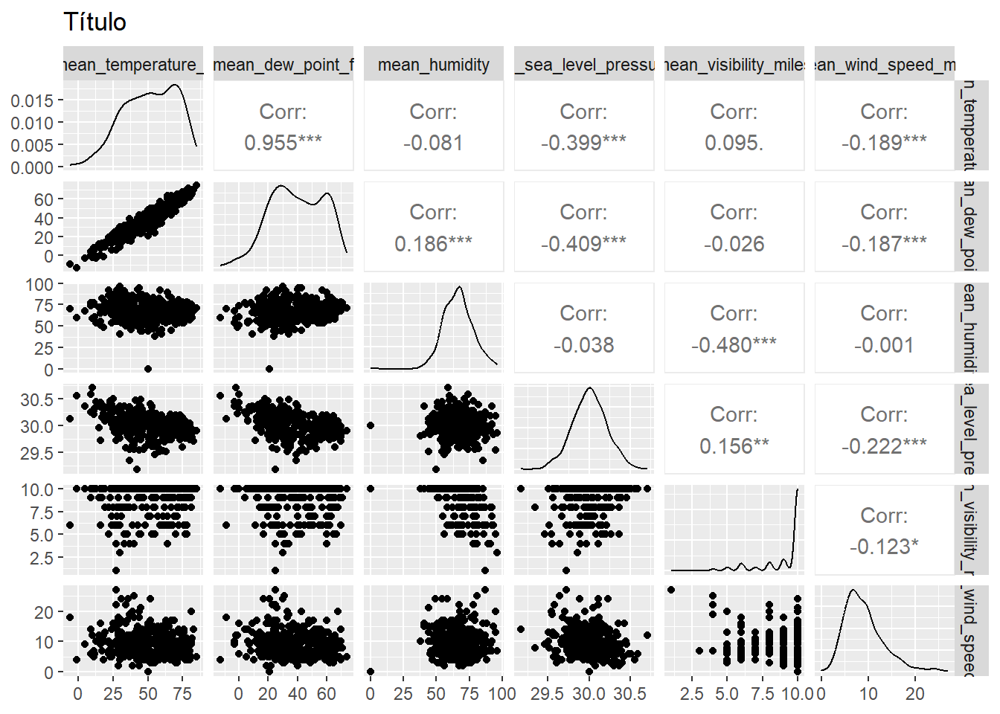
Gráficos nativos
# Base de dados do tidyverse
# Daily air quality measurements in New York, May to September 1973.
Ozone <- airquality$Ozone
Temperature <- airquality$Temphist(Temperature,
main = "Histogram Temperature",
xlab = "degrees Fahrenheit (ºF)")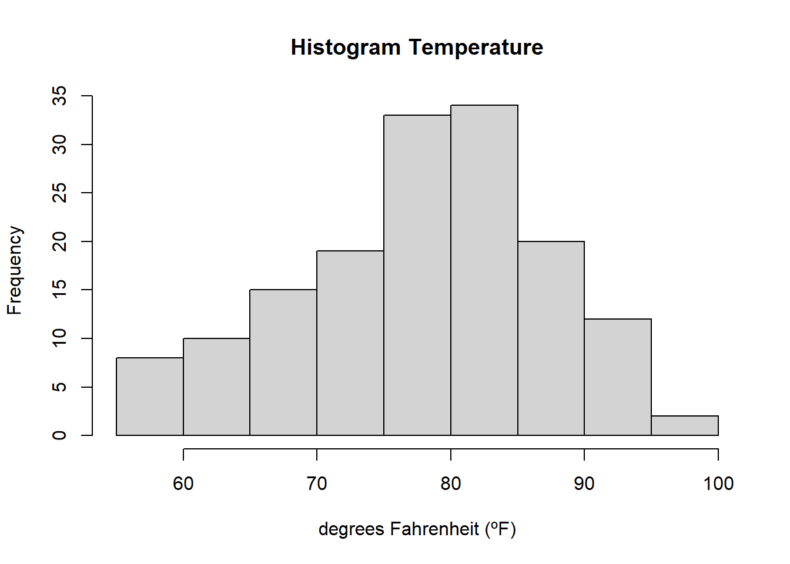
boxplot(Temperature,
main = "Boxplot Temperature",
xlab = "degrees Fahrenheit (ºF)",
horizontal = TRUE)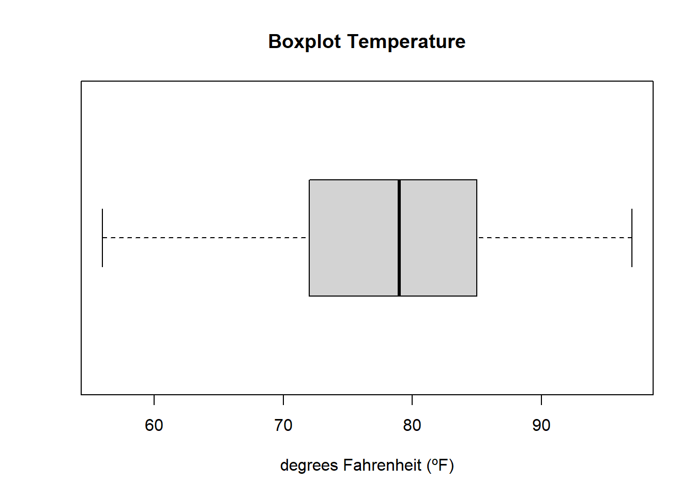
plot(Temperature, main = "Temperature")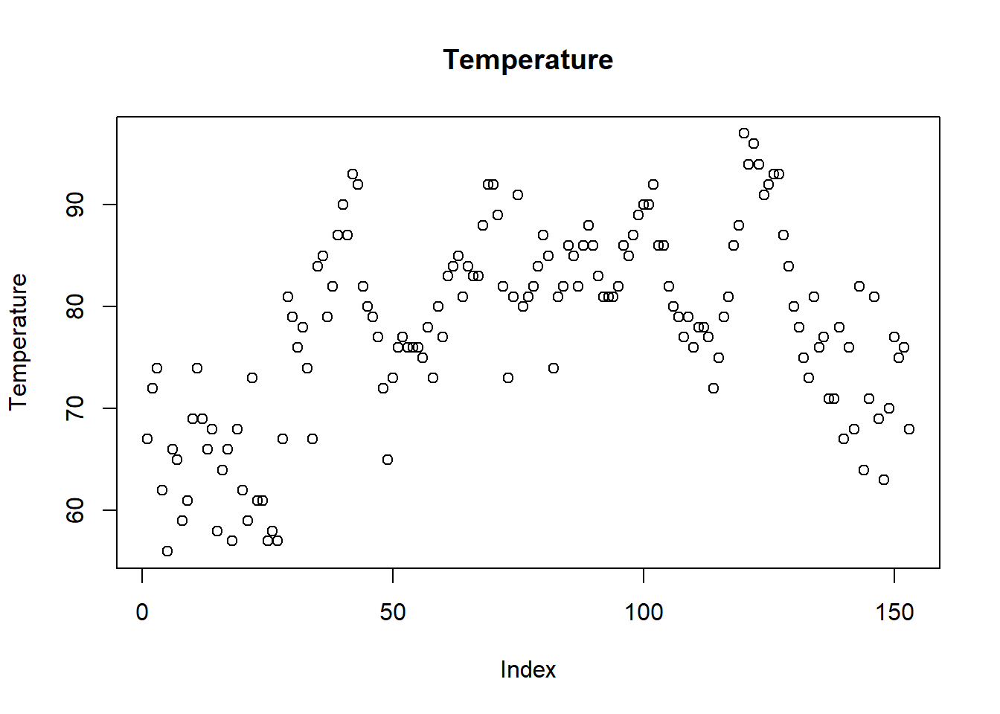
plot(density(Temperature),
main = "Density Temperature")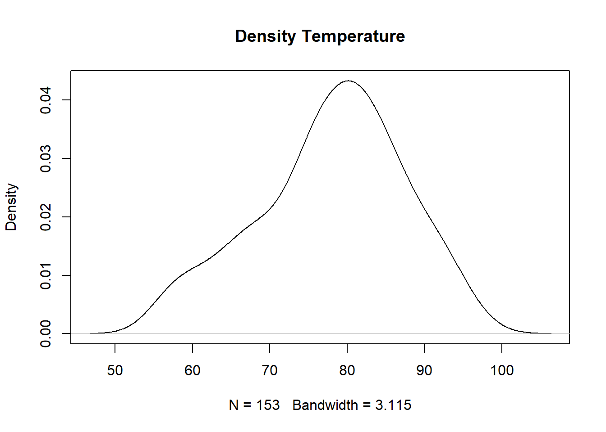
ggplot
Camadas ggplot
dados |>
ggplot(aesthetics()) +
geometries(statistics()) +
facets() +
themes() +
coord() +
scales()Dados
dados_gapminder <- gapminder::gapminder |> janitor::clean_names()
glimpse(dados_gapminder)Rows: 1,704
Columns: 6
$ country <fct> "Afghanistan", "Afghanistan", "Afghanistan", "Afghanistan",…
$ continent <fct> Asia, Asia, Asia, Asia, Asia, Asia, Asia, Asia, Asia, Asia,…
$ year <int> 1952, 1957, 1962, 1967, 1972, 1977, 1982, 1987, 1992, 1997,…
$ life_exp <dbl> 28.801, 30.332, 31.997, 34.020, 36.088, 38.438, 39.854, 40.…
$ pop <int> 8425333, 9240934, 10267083, 11537966, 13079460, 14880372, 1…
$ gdp_percap <dbl> 779.4453, 820.8530, 853.1007, 836.1971, 739.9811, 786.1134,…ggplot só com os dados
Oferecer somente os dados para a função ggplot( ) retorna em branco, pois faltam as camadas de estética e geometria.
dados_gapminder |>
ggplot()
ggplot com os dados e a estética
Oferecer dados e estética para a função ggplot( ) retorna o plano cartesiano com as escalas das variáveis oferecidas para cada eixo. Porém não há gráfico pois falta a camada de geometria.
dados_gapminder |>
ggplot(aes(x=gdp_percap, y=life_exp))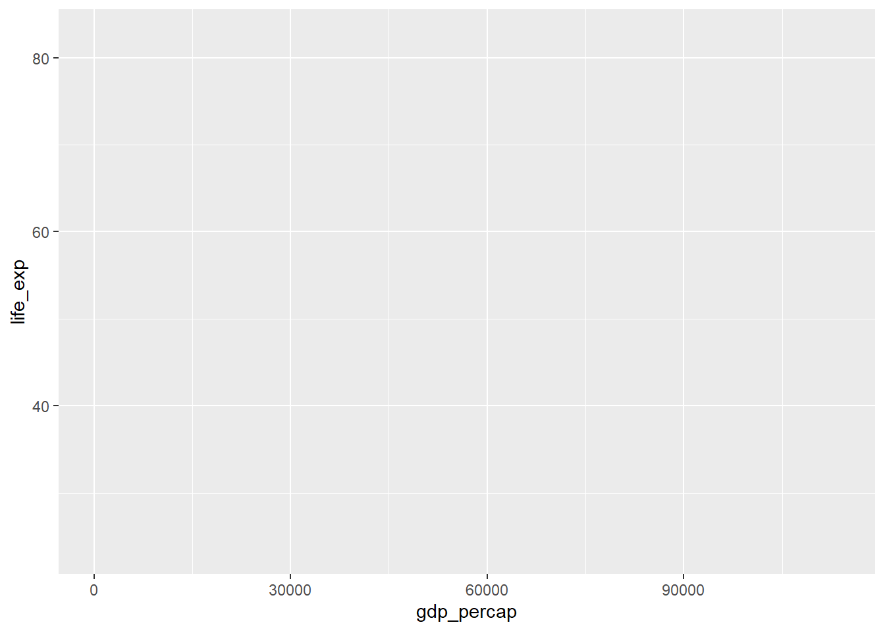
ggplot completo
dados_gapminder |>
ggplot(aes(x=gdp_percap, y=life_exp)) +
geom_point()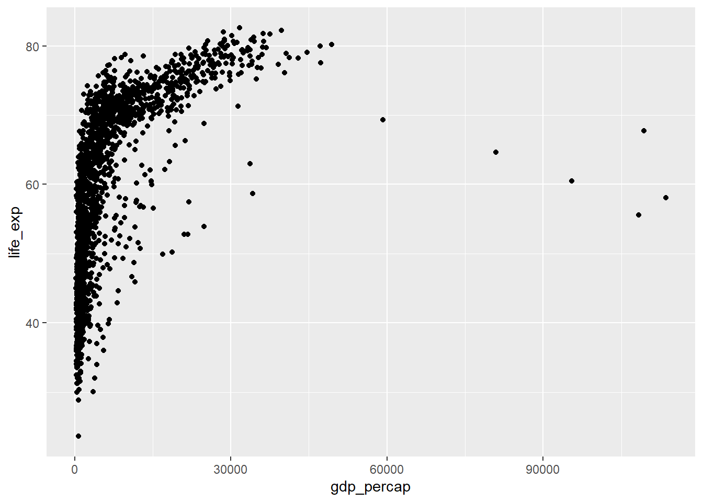
Adicionar linha de tendência
dados_gapminder |>
ggplot(aes(x=gdp_percap, y=life_exp)) +
geom_point() +
geom_smooth()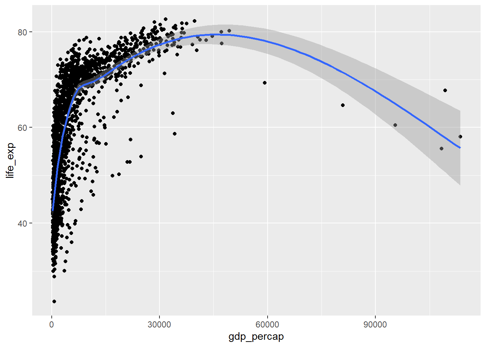
# pode-se mudar o tipo da regressão pelo argumento method =Transparência dos pontos
O argumento alpha= do geom_point( ) é útil para verificar para onde aponta a massa de dados.
dados_gapminder |>
ggplot(aes(x=gdp_percap, y=life_exp)) +
geom_point(alpha=0.1)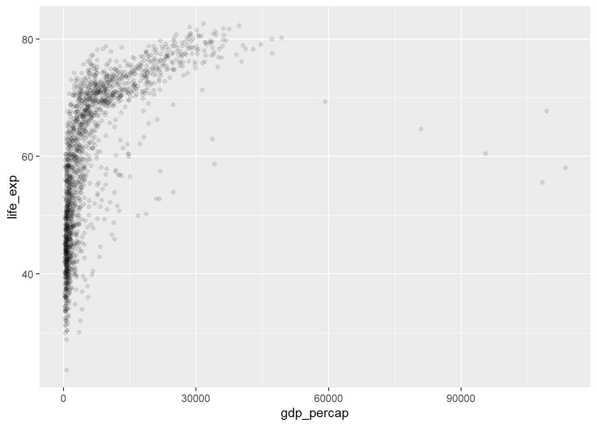
Colorir categoria global e linha de tendência
Ao colorir os pontos por uma variável que etiquetará os dados dentro da estética global, é criado uma categorização que afetará o comportamento das camadas subsequentes. Nesse caso, a linha de tendência foi criada para cada categoria.
dados_gapminder |>
ggplot(aes(x=gdp_percap, y=life_exp, colour = continent)) +
geom_point() +
geom_smooth()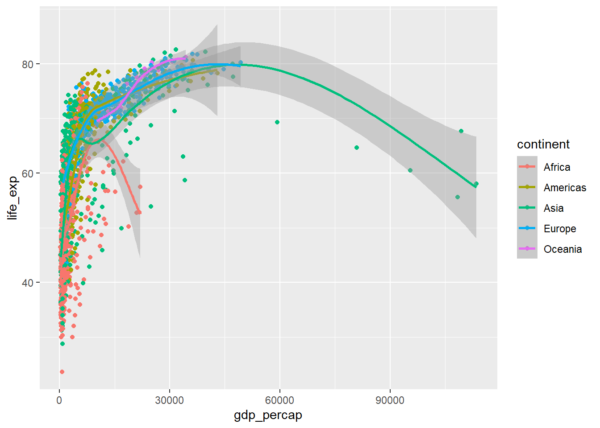
Colorir categoria local e linha de tendência
Em contraste ao exemplo anterior, ao colorir os pontos por uma variável que etiquetará os dados dentro da estética da camada local, é criado uma categorização que afetará apenas o comportamento daquela camada. Nesse exemplo a linha de tendência é criada para o conjunto global dos dados, e não para cada categoria.
dados_gapminder |>
ggplot(aes(x=gdp_percap, y=life_exp)) +
geom_point(aes(colour = continent)) +
geom_smooth()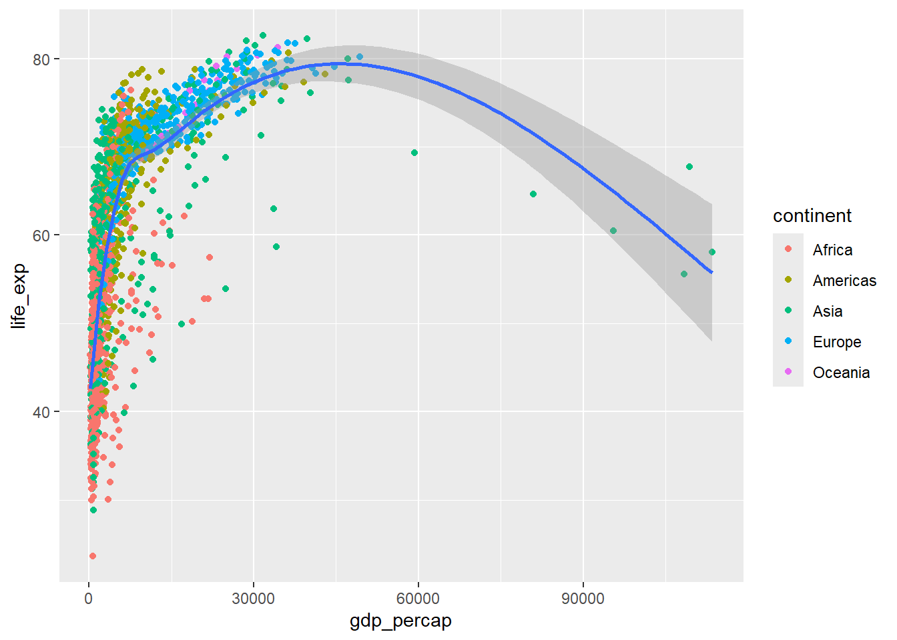
Incluir infos textuais no gráfico
dados_gapminder |>
ggplot(aes(x=gdp_percap, y=life_exp)) +
geom_point(aes(colour = continent)) +
geom_text(aes(label = country))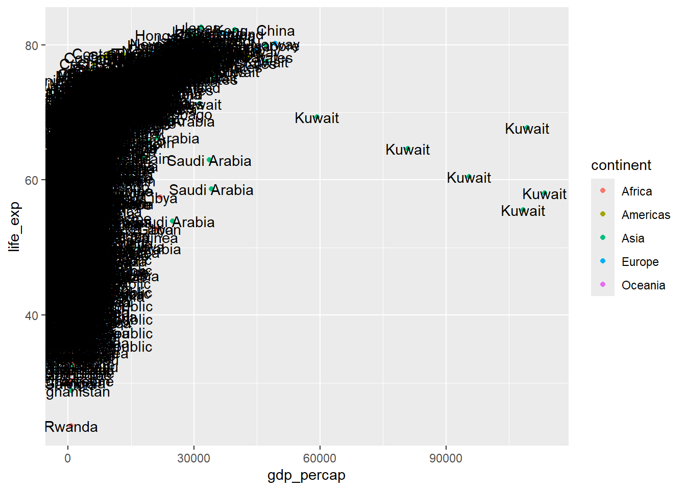
Filtrar quais dados quero destacar com texto
Mostrar, dentre toda a base, o país que alcançou a maior expectativa de vida em cada continente
dados_gapminder |>
ggplot(aes(x=gdp_percap, y=life_exp)) +
geom_point(aes(colour = continent), alpha = 0.3) +
geom_text(data = dados_gapminder |>
group_by(continent) |>
filter(life_exp==max(life_exp)) |>
ungroup(),
aes(label = country))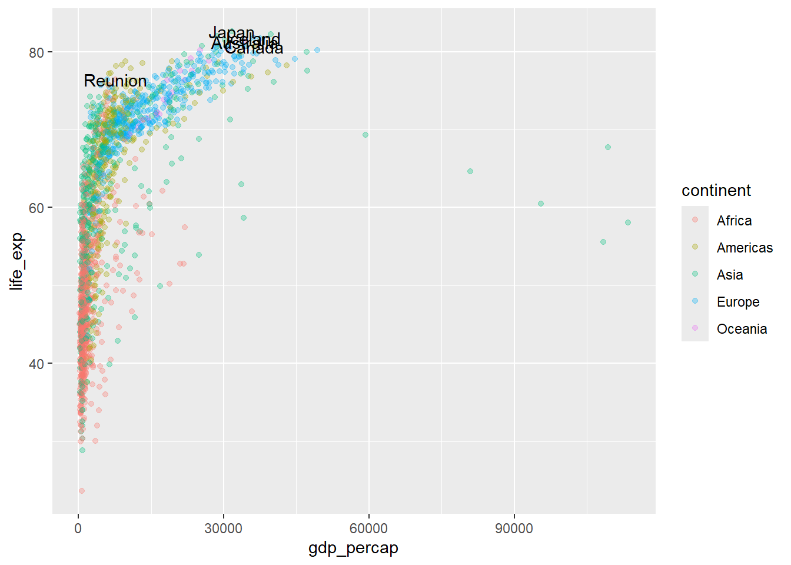
Gráfico de linhas para visualizar média e dispersão
Essa visualização possibilita ver a evolução conjunta dos países de cada continente. Se diminuíram a dispersão, quer dizer que melhoram no geral, como é o caso das Americas. Diferentemente do caso da Africa, em que a expectativa de vida média aumentou, mas a dispersão também.
dados_gapminder |>
ggplot(aes(x=year, y=life_exp, colour = continent)) +
geom_point(colour = "gray") +
geom_line(aes(group = country),colour = "gray") + #ao agrupar por país, a função cria uma curva que representa a série de tempo de cada país. Quando o argumento group é omitido, as observações de todos os países são ligadas umas às outras na sequência da data, sem agrupar por país.
geom_smooth()+ # cria a curva de tendência, e nesse caso serve como uma média
theme_minimal()+ # altera o tema de fundo das legendas de continente dentro do gráfico
facet_grid(continent ~ .) # essa função produz múltiplos gráficos e os organiza em uma matriz de linhas e colunas. A sintaxe x ~ y oferece qual variável categórica vai determinar as linhas (x) e qual vai determinar as colunas (y). Quando uma das variáveis é omitida por um ponto '.', então cria-se apenas linhas ou colunas, a depender de qual foi omitida. Nesse exemplo, continentes determina a quantidade de linhas, e será organizado em uma coluna.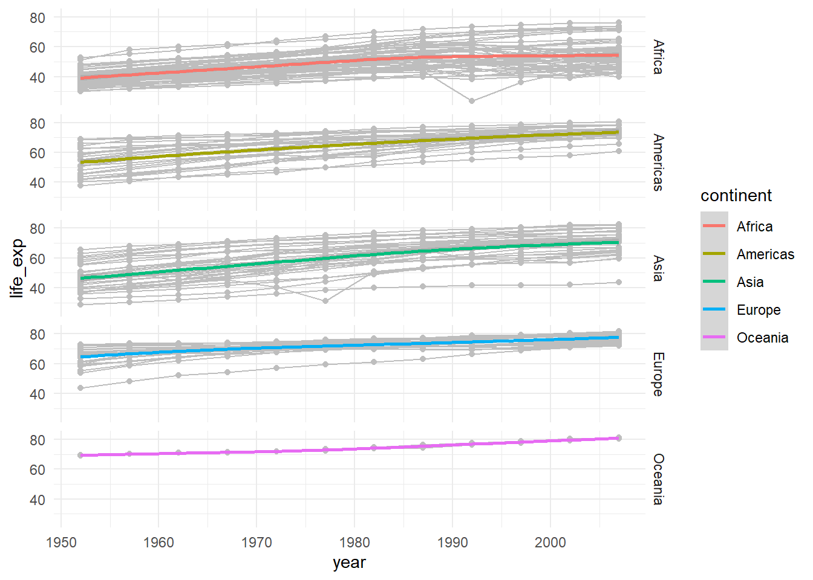
Escala do eixo y livre
Com a flexibilização do eixo y nota-se pouca diferença para a análise dos continentes, exceto para Oceania, que na visualização anterior aparente não ter ganhos expressivos em expectativa de vida. Com o ajuste do eixo y é possível notar uma mudança de trajetoria importante a partir do final da década de 70.
dados_gapminder |>
ggplot(aes(x=year, y=life_exp, colour = continent)) +
geom_point(colour = "gray") +
geom_line(aes(group = country),colour = "gray") + #ao agrupar por país, a função cria uma curva que representa a série de tempo de cada país. Quando o argumento group é omitido, as observações de todos os países são ligadas umas às outras na sequência da data, sem agrupar por país.
geom_smooth()+ # cria a curva de tendência, e nesse caso serve como uma média
theme_minimal()+ # altera o tema de fundo das legendas de continente dentro do gráfico
facet_grid(continent ~ ., scales = "free_y") # cria um eixo y para cada valor da categoria oferecida como argumento, no caso: continent. O argumento scales cria flexibilidade ou fixação dos eixos.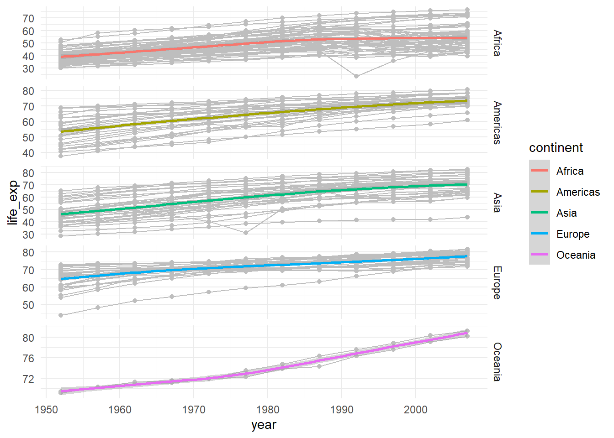